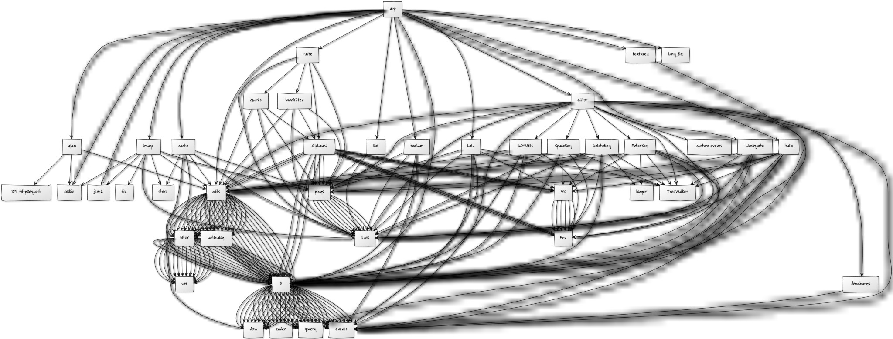
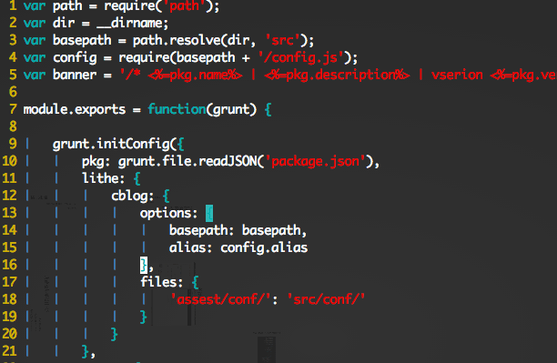

门户技术-博客技术高级前端开发工程师付强
2014/03/24
1.自我介绍
2.主要项目剖析
3.个人突出表现
4.Q&A
javascript & nodejs 是我每天都需要编写的
面对每个项目,前端工程化是我必须要做的
让页面更快一些，我就会更开心一点
重复劳动终结者
代码洁癖症患者
Sjs Ui2013-2013
微博相册2012-2013
淘宝试用中心2011-2012
长微博2013-2014
前端开发环境标准化2013-2014
A browser-side script loader,compatible with the de facto standards(NodeJS/CommonJS).
version 0.3.2
nodejs supported,debug model,grunt-plugs
方便，易用，统一的构建标准，正在取代之前的开发方式.
长微博,微相册,媒体开放平台,移动博客,通行证...
扩容性,模块统一化
移动端,插件化
Lithe.js + Ender + ...(快速的产品搭建方式)
Build by GruntJs and Lithe
Core api + Custom plugs
Compatible Range


客户端，H5，主站CARD(跨部门)
mobile的兼容性问题
Nodejs Powerful!
专门为前端开发人员定制的开发环境
LAMP,Fiddler
hosts-group,proxy-server,持续集成,自动部署,跨平台
service master,express,hosts-group,bouncy,node-static,nproxy
提升了团队整体的nodejs开发水平
让中高级开发工程师了解自动化工具构建技巧
前端环境工程化，前端开发方式的统一
更快更好
2年里大部分和组内分享10余次，对外分享一次(lamp新浪专场)
试用期就获得优秀个人奖,参与项目均获得大部创新奖和优秀项目团队奖
专注nodejs学习，拥有一个start过百的开源nodejs项目
创新论坛中成功入围复赛，微博前端code大赛第三名
黑客马拉松项目入围前5
跨界学习phonegap开发，并给组内制作了native demo。
使用空格或者箭头切换